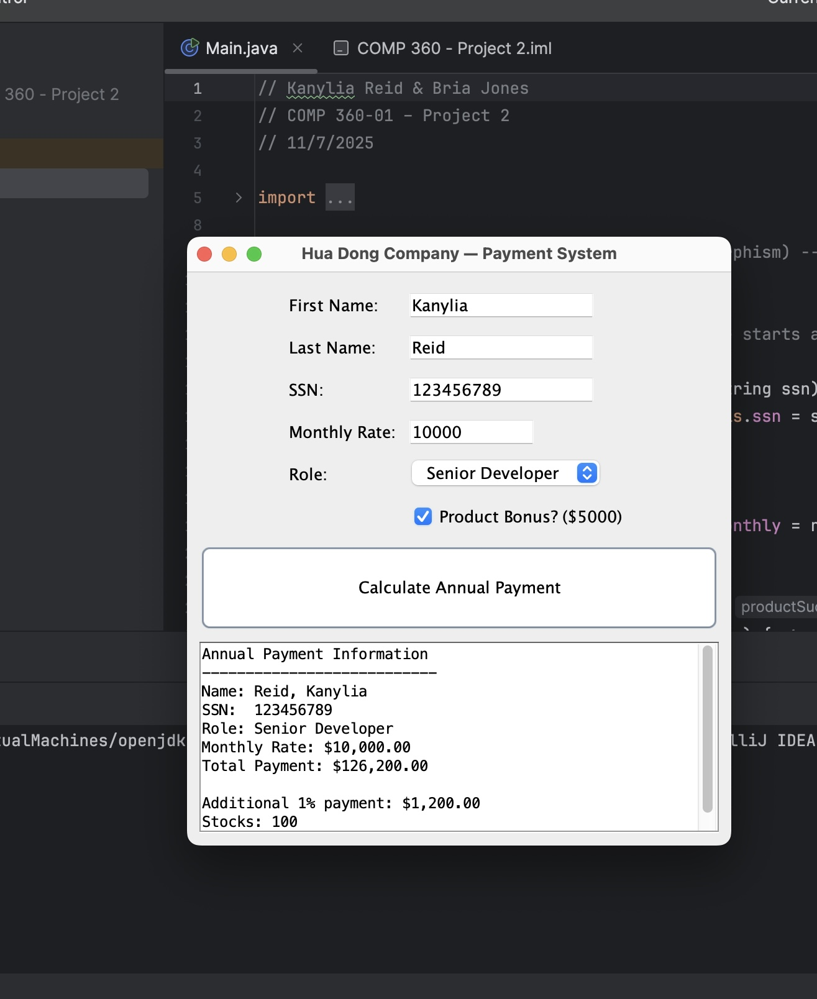
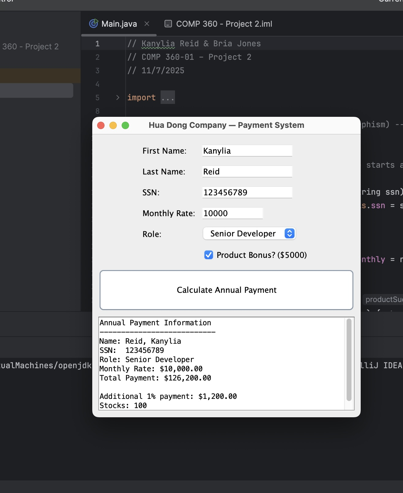

| Education |
North Carolina A&T State University — B.S. Computer Science (GPA 3.77), Dec 2026 Honors: Aggie Merit Scholarship (2023–Present), Upsilon Pi Epsilon (UPE) Member |
|---|---|
| Certification | Fayetteville Technical Community College — Python Programming Certificate (GPA 4.0), Jun 2023 |
| Technical Skills |
Languages: Python (Certified), Java, R, C++, SQL, HTML, CSS Tools & Concepts: Git, MySQL, Debugging, Data Structures, DB Management, Software Testing, Agile |
| Projects |
Aggie Shell (ASH) — Unix-style shell (fork/exec), PATH handling, output redirection Database Management Project — SQL database, stored procedures, permissions Employee Compensation System — Java payroll + GUI, inheritance/polymorphism Local Animal Shelter Website — Multi-page HTML/CSS site |
 
